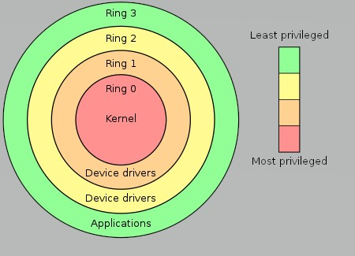

CPU runs in several states. Most of the time it runs user space programs or is idle. However, there are several other states, and monitoring them can help you keep your system healthy and running smoothly. We will be using the Linux command top to see the CPU stats. But before that, we need to understand certain terms. First, I explain the meaning of such terms, before moving on to understand the stats.
Program: It is a code that is stored in the computer that is intended to fulfill a certain task. When this program is run, it is loaded in the memory in binary form.
Process: The program needs memory along with other resources to run. This allocation of resources is done by the operating system. This program in execution is called a process. It performs tasks mentioned in the program.
Computer operating systems provide different levels of access to resources. A protection ring is one of two or more hierarchical levels or layers of privilege within the architecture of a computer system. Rings are arranged in a hierarchy from most privileged (most trusted, usually numbered zero) to least privileged (least trusted, usually with the highest ring number).
Kernel space: Kernel space code executes under the ring 0. This is the level with the most privileges and interacts most directly with the physical hardware such as the CPU and memory.
User space: Ring 3 is what typical applications run under. This is the least privileged ring. Least-privileged means that processes in this mode are prohibited from accessing those portions of memory that have been allocated to other programs or the kernel. Processes running in user space don't have access to the kernel space. User space processes can only access a small part of the kernel via an interface exposed by the kernel - the system calls. The role of the kernel is to manage applications running in this space from messing with each other, and the machine.
System calls: A system call is a request in an operating system made via a software interrupt by an active process for a service performed by the kernel, such as input/output (i.e., any movement of information to or from the combination of the CPU and main memory) or process creation (i.e., creation of a new process).
Virtual Memory: A computer can address more memory than the amount of memory physically installed on the system. The system takes responsibility to execute the program even though the sum of all the memory required may be more than physical memory. With a limited amount of available memory, the system executes a program that needs physical memory even more than the total physical memory. Thus, the user thinks that he has been allocated the required memory. But this memory is not physically available. This notion is called Virtual Memory. This is possible because the entire program will not be needed to be loaded for the program to be executed. It will be enough to have memory for the next instruction to be executed and the data required by it for execution.
Peripherals: A peripheral or peripheral device is an auxiliary device used to put information into and get information out of the computer. One or more CPUs, device controllers connect through a common bus providing access to shared memory. Each device controller is in charge of a device type. Disk controller understands the language of both the CPU and the device. Device controllers inform the CPU by causing an interrupt.
Interrupts: Exception generated by external hardware via a system bus. An interrupt is a signal to the kernel that an event has occurred, and this results in changes in the sequence of instructions that are executed by the CPU. One of the two main types of interrupts, a hardware interrupt, is a signal to the system from an event that has originated in hardware, such as the pressing of a key on the keyboard, a movement of the mouse, or a progression in the system clock. A software interrupt is an interrupt that is caused by software, usually by a program in user mode. When it receives a software interrupt signal, the CPU may temporarily switch control to an interrupt handler routine, and the process in the kernel that was suspended by the interrupt will be resumed after the interrupt has been accommodated. Each type of software interrupt is associated with an interrupt handler, which is a software routine that takes control when the interrupt occurs.
Wait instruction: For a given CPU, the I/O wait time is the time during which that CPU was idle and there was at least one outstanding disk I/O operation requested by a task scheduled on that CPU (at the time it generated that I/O request).
Swap memory: It is a space on the disk that is used when the RAM is full. It is however slower than the RAM.
Buffer: This shows the amount of page cache used for block devices. Block devices are the most common type of data storage device.
Cache: A CPU cache is a hardware cache used by the central processing unit (CPU) of a computer to reduce the average cost (time or energy) to access data from the main memory. A cache is a smaller, faster memory, located closer to a processor core, which stores copies of the data from frequently used main memory locations.
buff/cache: Sum of buffer and cache.
avail mem: The amount of memory that is available for a new workload, without pushing the system into swap.
load average: The load average is the average system load on a Linux server for a defined period. The numbers given by top command are the averages of the system load for one, five, and 15 minutes.
S - Process Status
The status of the task which can be one of:
PR - The priority of the task.
NI - Nice value - The nice value of the task. A negative nice value means higher priority, whereas a positive nice value means lower priority.
RES - Resident size (kb) - The non-swapped physical memory a task has used.
SHR - Shared Mem size (kb) - The amount of shared memory used by a task. It simply reflects memory that could be potentially shared with other processes.
TIME - Total CPU time the task has used since it started.
The CPU states are shown in the Summary Area. They are always shown as a percentage and are for the time between now and the last refresh.
us: The percentage of time the CPU has spent running user processes that are not niced. If this value is high then it means that some user process is taking a lot of the CPU time. You can see the table below for the details of any such process. You can restart or kill the process using the process ID.
ni: The priority level of a user-space process can be tweaked by adjusting its niceness. The ni stat shows how much time the CPU spent running user space processes that have been niced. On a system where no processes have been niced then the number will be 0. If this value is high, it means that someone has niced some CPU-intensive task. If the niced value is greater than 0, then it might have been done to avoid CPU overload. But if the niceness level is less than 0, then you will need to investigate what is happening and who is responsible, as such a task could easily cripple the responsiveness of the system.
id: Tells us the percentage of time the processor was idle during the sampling period.
sy: The percentage of time the CPU has spent running the kernel and its processes. Sometimes high value is acceptable when a program does a lot of I/O. However, if it remains high for long periods then it an indication that something isn’t right. A possible cause of such spikes could be a problem with a driver/kernel module.
wa: Amount of time the CPU has been waiting for I/O to complete. If this number is high for any-thing other than short bursts then it means that either the I/O performed by the task is very ineffi-cient, or the data is being transferred to a very slow device, or there is a potential problem with a hard disk that is taking a long time to process reads & writes.
si: The amount of time the CPU has been servicing software interrupts. A high value means some process is issuing lots of software interrupts.
hi: The amount of time the CPU has been servicing hardware interrupts. High value could be an indication of a broken peripheral that is causing lots of hardware interrupts.
st: Steal Time - The amount of CPU 'stolen' from this virtual machine by the hypervisor for other tasks (such as running another virtual machine). If this value is high, it means that the host system running the hypervisor is too busy. If possible, check the other virtual machines running on the hypervisor, and/or migrate your virtual machine to another host.